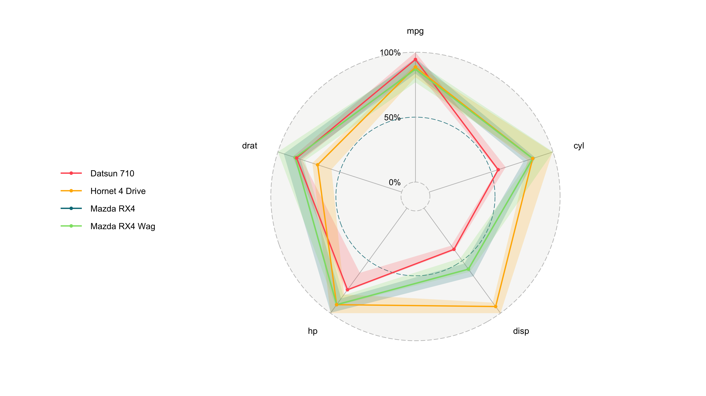
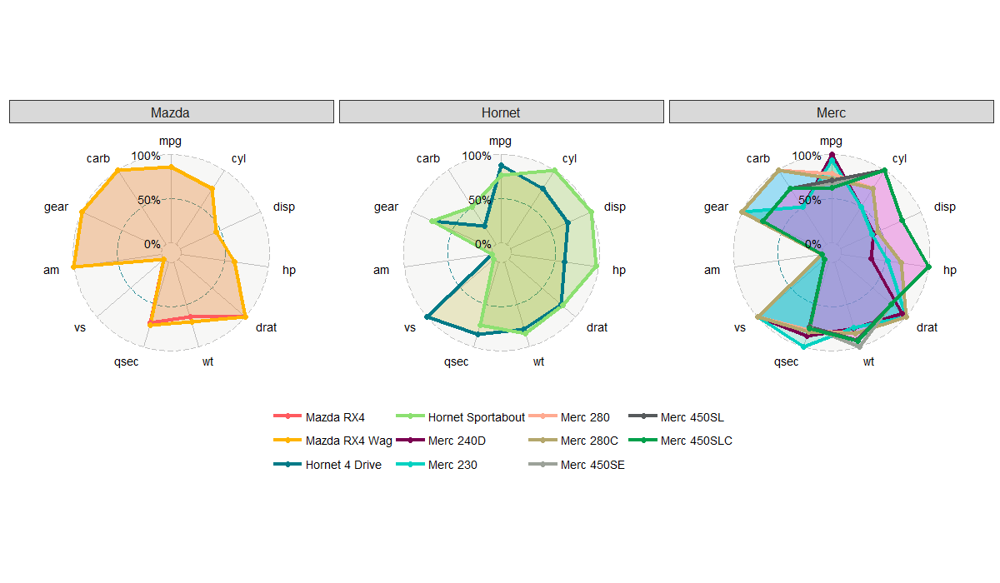

I developed packages in R and Python for research and data visualization.
Phydon
Phydon is a R package that estimates maximum growth rates of bacteria from genomic data. This package implements a method detailed in Our paper, which leverages phylogenetic signals and mechanistic statistics, specifically codon usage bias (CUB) (see gRodon for details of this mechanistic method), to enhance the accuracy of growth rate estimations. By integrating these advanced techniques, Phydon provides a robust tool for microbial growth rate analysis based on genomic information.
You can install Phydon from GitHub with:
1 | if (!requireNamespace("devtools", quietly = TRUE)) |
[!IMPORTANT]
Phydon has several essential dependencies, includinggRodon2,ape,Biostrings,picante, etc. Please make sure you have installed these packages before using Phydon.
1 | if (!requireNamespace("BiocManager", quietly = TRUE)) |
ggradar2
ggradar2 is a gg-function to draw a radar plot for data analysis. It is based on ggradar by Ricardo Bion and CreateRadialPlot by Paul Williamson. It has been extended with more features and functionalities.
Run the code with package devtools installed.
1 | devtools::install_github("xl0418/ggradar2",dependencies=TRUE) |
 Figure 1. Single plot.
 Figure 2. Multiple plots.